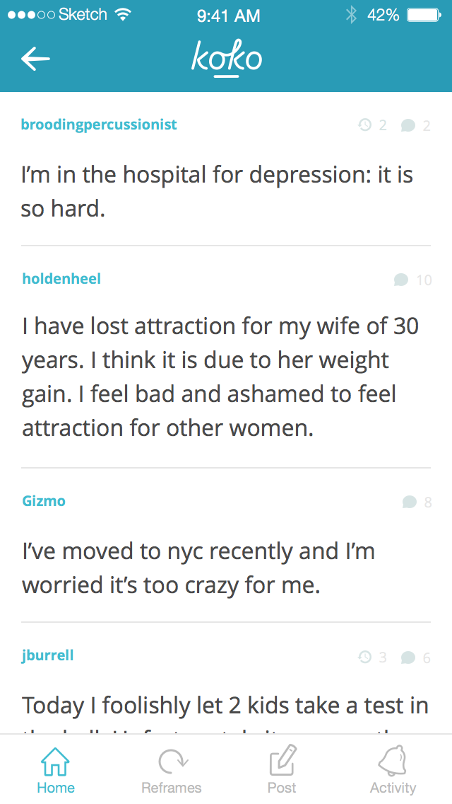
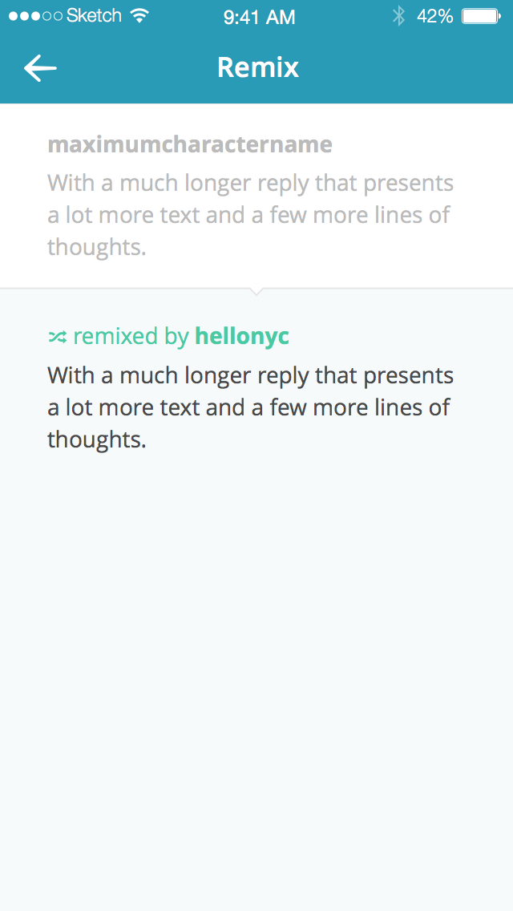
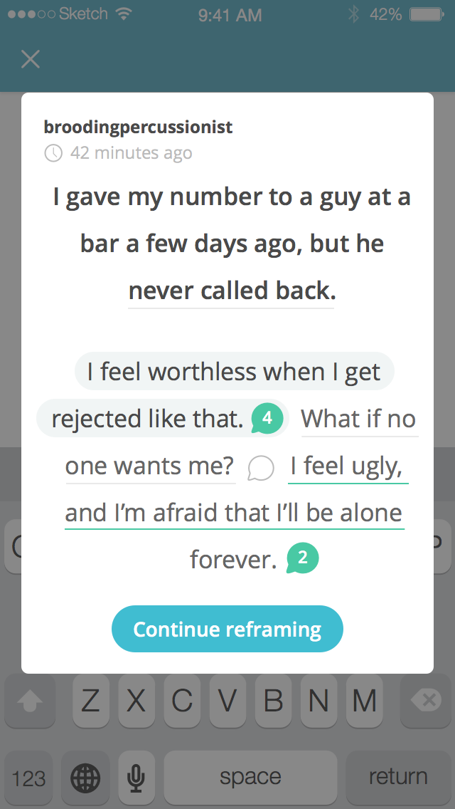
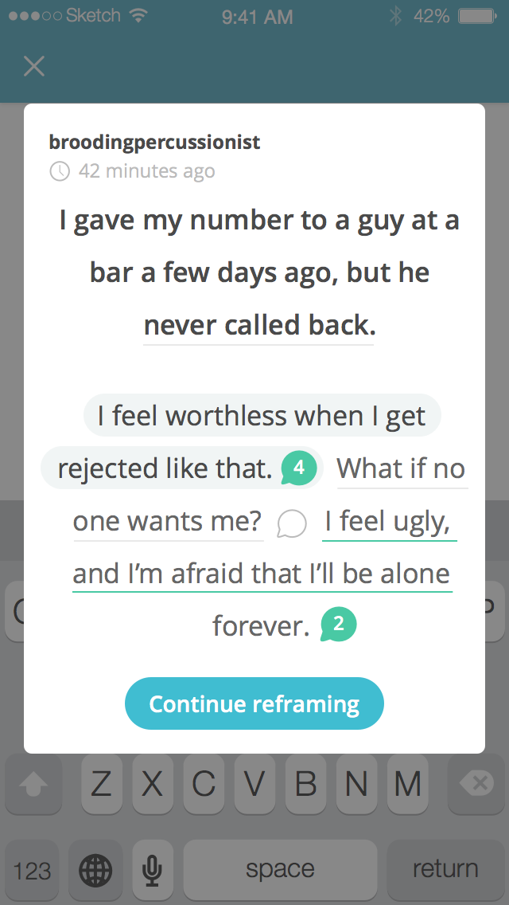

Mental health is important
And we all have plenty going on that negatively affects it. Using Cognitive Reframing, Koko's users help each other by breaking down problems and offering new perspective.
It's really amazing to see in action.
Koko came to Dan and me with a sprint they needed to wrap up; it was a rush job before a holiday weekend. Yikes.
When they sent us the beta app, we poked around and immediately knew we had to help.
Seeing a community of people who are helping one another for the sake of helping is rare and special.
I couldn't turn down an opportunity to serve that kind of audience.
Safeguarding the community
While the MVP features were already built—the feed, posting, reframing, liking reframes—the lack of any kind of peer moderation meant that scaling up while preserving the quality of the community would be challenging.
New users' reframes must be reviewed by an existing, experienced user. Until that happens they are visible, in a queue, to everyone except the user whose post is being reframed.
A user who approves a reframe can approve it as-is or remix it if they feel it needs some tweaking. This will publish the remixed reframe with a link to the original, too.
Preserving context
Composing reframes also needed a touch up. Users needed the option to toggle the aforementioned peer reviews for reframes.
 

The ability to reference the original post you're reframing while composing one was missing, too. We solved this by showing a snippet of the original post—centered on the sentence the user is responding to—that expands to reveal the full post on tap.
A few extra screens


Responsible for
interface and interaction design